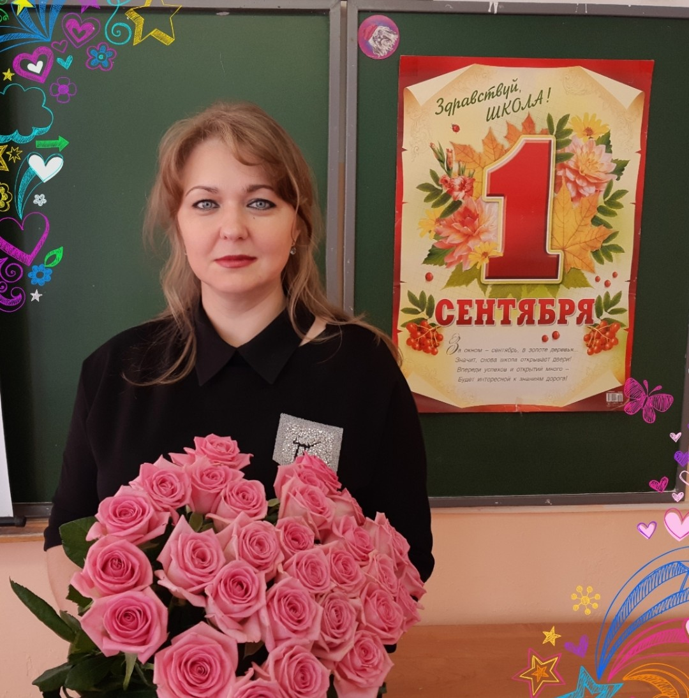

Дорогие друзья, здравствуйте!
Я рада приветствовать Вас на моем официальном сайте.
Сайт адресован учителям истории, обществознания и права, классным
руководителям, обучающимся и их родителям.
Цель создания персонального сайта: обобщение и распространение педагогического опыта и школьной информации в Интенет-пространстве.
Буду рада, если материалы сайта будут Вам полезны, а также с удовольствием отвечу на Ваши вопросы и предложения. С уважением, Малямова Н.И.
Цель создания персонального сайта: обобщение и распространение педагогического опыта и школьной информации в Интенет-пространстве.
Буду рада, если материалы сайта будут Вам полезны, а также с удовольствием отвечу на Ваши вопросы и предложения. С уважением, Малямова Н.И.

Обо мне
Малямова Наталья Ивановна
Сообщаю о себе следующие сведения: образование высшее - 2005г, Уральская
государственная юридическая академия, квалификация – юрист, специальность –
«Юриспруденция»;
1999 год, Свердловский областной педагогический колледж, квалификация – учитель
истории основной общей школы; специальность – «история».
Стаж педагогической работы (по специальности) – 10 лет.
В настоящее время работаю в МАОУ СОШ №2 г.Первоуральска Свердловской обласи учителем истории, обществознания и права.
Стаж педагогической работы (по специальности) – 10 лет.
В настоящее время работаю в МАОУ СОШ №2 г.Первоуральска Свердловской обласи учителем истории, обществознания и права.

Контент
Мой сайт будет полезен всем участникам образовательного процесса.
Особое место на сайте занимают рубрики: «ВПР» и «готовимся к экзаменам». В
них представлены материалы для подготовки к ВПР, ОГЭ и ЕГЭ: информация
об экзамене, тренировочные задания разного уровня сложности. Данной
рубрикой могут воспользоваться не только учителя и обучающиеся, но и
родители, если Ваш ребенок готовится к экзамену самостоятельно.
dev:
email: zxcqwesa@vk.com
tg: @zxcqwesa
email: zxcqwesa@vk.com
tg: @zxcqwesa